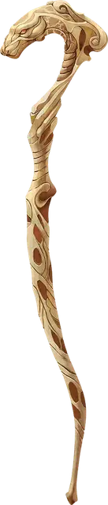

Посох питона
Staff of the Python
Посох, необычный (требуется настройка)

Рекомендованная стоимость 400 зм
Действием Магия вы можете бросить этот посох в незанятое пространство в пределах 10 футов от вас. Упав там, посох превращается в Гигантского удава. Эта змея находится под вашим управлением; в бою она имеет то же значение Инициативы, что и вы, и ходит сразу после вас.
В ваш ход вы можете мысленно отдавать змее приказы (действий не требуется), если она находится в пределах 60 футов от вас, а у вас нет состояния Недееспособный. Вы решаете, какое действие предпримет змея, и куда будет перемещаться в свой ход; вы можете также отдать более общий приказ, как например, атаковать ваших врагов или охранять некое место. Если вы не отдаёте приказов, змея защищает себя.
Бонусным действием вы можете отдать змее приказ, и она вернётся в форму посоха в своём текущем местоположении. После этого вы не можете использовать эту особенность посоха снова в течение 1 часа. Если Хиты змеи опускаются до 0, она умирает и возвращается в форму посоха, а посох тут же трескается и уничтожается. Если змея возвращается в форму посоха до того, как её Хиты опустятся до 0, она восстанавливает все свои Хиты.